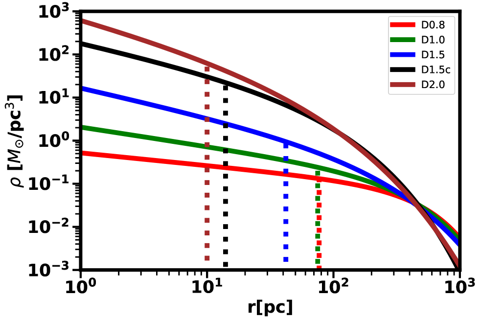
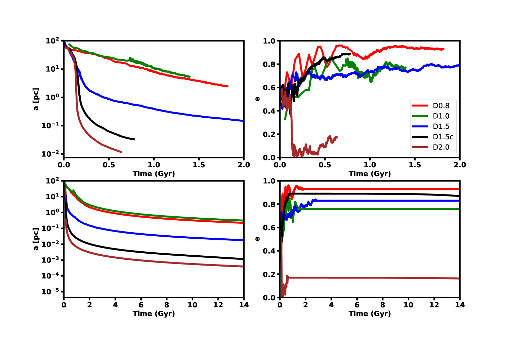
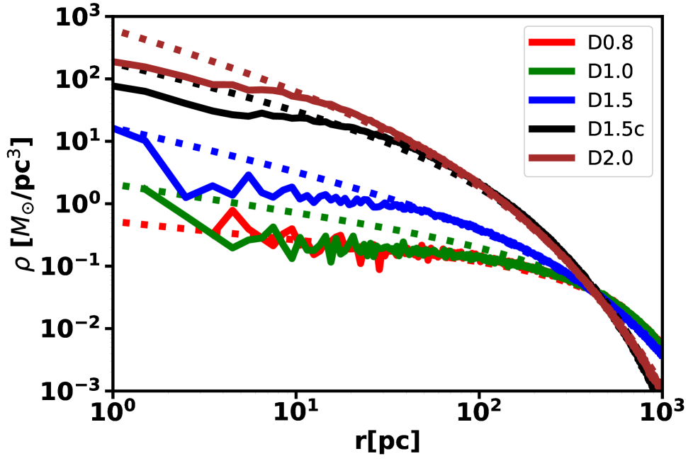
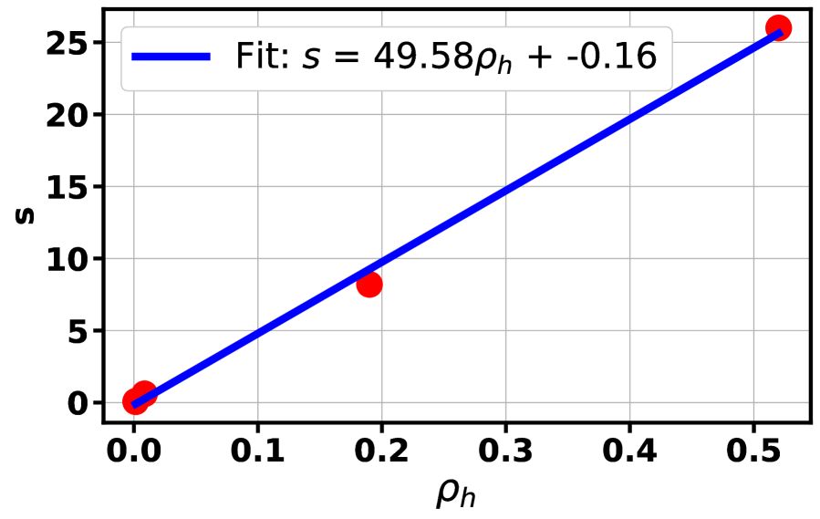
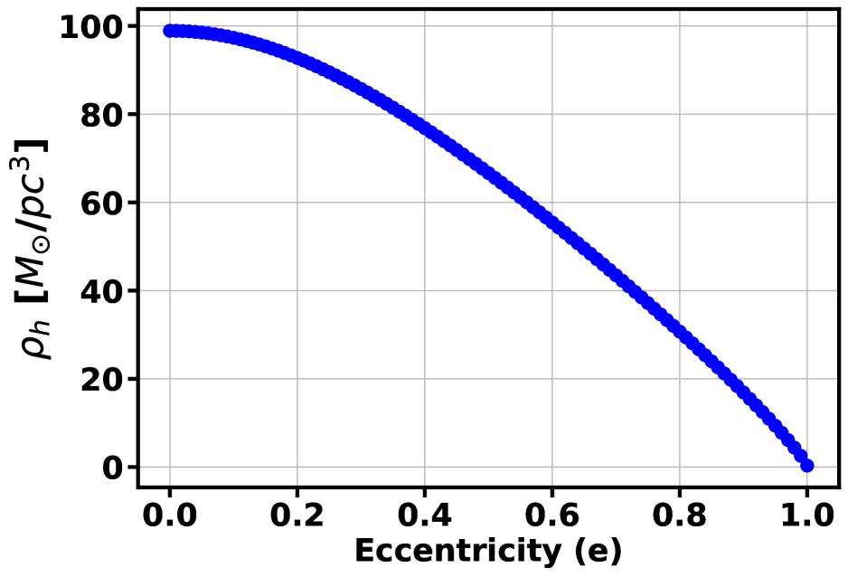

إمكان بقاء ثنائيات الثقوب السوداء متوسطة الكتلة مدة طويلة في المجرات القزمة الأقل كثافة
الملخص
من المتوقع أن تُنتج اندماجات الثقوب السوداء متوسطة الكتلة (IMBH) ذات الكتل  موجات ثقالية (GWs) قابلة للرصد بواسطة مرصد هوائي مقياس التداخل الليزري الفضائي (LISA) بنسب إشارة إلى ضجيج عالية حتى انزياح أحمر 20. ومن المتوقع أن تحدث اندماجات IMBH داخل المجرات القزمة، غير أن ديناميكياتها ومقاييسها الزمنية وأثرها في المجرات المضيفة لا تزال غير مستكشفة إلى حد بعيد. في دراسة سابقة، فحصنا كيف يمكن لـ IMBH أن تقترن وتندمج داخل المجرات القزمة ذات النوى. تتطور IMBH في المضيفات ذات النوى بكفاءة عالية، إذ تكوّن نظاما ثنائيا وتلتحم خلال بضع مئات من ملايين السنين. ومع أن نسبة المجرات القزمة ( M M⊙) التي تستضيف عناقيد نجمية نووية تقع بين 60-100%، فإن هذه النسبة تنخفض إلى 20-70% في الأقزام الأقل كتلة ( M⊙)، مع أكبر انخفاض في البيئات منخفضة الكثافة. هنا نوسع دراستنا السابقة بإجراء محاكيات مباشرة ذات
موجات ثقالية (GWs) قابلة للرصد بواسطة مرصد هوائي مقياس التداخل الليزري الفضائي (LISA) بنسب إشارة إلى ضجيج عالية حتى انزياح أحمر 20. ومن المتوقع أن تحدث اندماجات IMBH داخل المجرات القزمة، غير أن ديناميكياتها ومقاييسها الزمنية وأثرها في المجرات المضيفة لا تزال غير مستكشفة إلى حد بعيد. في دراسة سابقة، فحصنا كيف يمكن لـ IMBH أن تقترن وتندمج داخل المجرات القزمة ذات النوى. تتطور IMBH في المضيفات ذات النوى بكفاءة عالية، إذ تكوّن نظاما ثنائيا وتلتحم خلال بضع مئات من ملايين السنين. ومع أن نسبة المجرات القزمة ( M M⊙) التي تستضيف عناقيد نجمية نووية تقع بين 60-100%، فإن هذه النسبة تنخفض إلى 20-70% في الأقزام الأقل كتلة ( M⊙)، مع أكبر انخفاض في البيئات منخفضة الكثافة. هنا نوسع دراستنا السابقة بإجراء محاكيات مباشرة ذات  جسيم لاستكشاف ديناميكيات IMBH وتطورها داخل المجرات القزمة غير ذات النوى، على افتراض أن IMBH موجودة داخل هذه الأقزام. وعلى نحو مفاجئ، لا يندمج أي من IMBH في مجموعة محاكياتنا ضمن زمن هابل، على الرغم من أن كثيرا منها يبلع شذوذات مركزية عالية
جسيم لاستكشاف ديناميكيات IMBH وتطورها داخل المجرات القزمة غير ذات النوى، على افتراض أن IMBH موجودة داخل هذه الأقزام. وعلى نحو مفاجئ، لا يندمج أي من IMBH في مجموعة محاكياتنا ضمن زمن هابل، على الرغم من أن كثيرا منها يبلع شذوذات مركزية عالية  . نخلص إلى أن البيئات ذات الكثافة النجمية المنخفضة جدا في مراكز الأقزام غير ذات النوى لا توفر مخزونا كافيا من النجوم للتفاعل مع ثنائية IMBH، مما يؤدي إلى توقفها، على الرغم من اللاتناظر ثلاثي المحاور والشذوذ المركزي العالي، وهما وسيلتان شائعتان لدفع ثنائية إلى الالتحام. تؤكد نتائجنا أهمية أخذ جميع خصائص المضيف التفصيلية في الحسبان للتنبؤ بمعدلات اندماج IMBH بالنسبة إلى LISA.
. نخلص إلى أن البيئات ذات الكثافة النجمية المنخفضة جدا في مراكز الأقزام غير ذات النوى لا توفر مخزونا كافيا من النجوم للتفاعل مع ثنائية IMBH، مما يؤدي إلى توقفها، على الرغم من اللاتناظر ثلاثي المحاور والشذوذ المركزي العالي، وهما وسيلتان شائعتان لدفع ثنائية إلى الالتحام. تؤكد نتائجنا أهمية أخذ جميع خصائص المضيف التفصيلية في الحسبان للتنبؤ بمعدلات اندماج IMBH بالنسبة إلى LISA.
1 المقدمة
تؤوي معظم المجرات الهائلة، بما في ذلك درب التبانة، ثقوبا سوداء مركزية هائلة (MHBs) ذات كتل (Ferrarese+05; Kormendy+13; graham+15). تكوّنت هذه الثقوب السوداء الهائلة مبكرا في التاريخ التطوري للكون، كما يتضح من وجود الكوازارات، وتُرصد في مجرات بعيدة حتى انزياح أحمر (mia23a; mia23b; lar23). وترتبط خصائص المجرة المضيفة، مثل الكتلة وتشتت السرعات واللمعان، بكتلة الثقب الأسود (har04; Gultekin+09; mcconnell+13; Davis and Jin, 2023)، مما يشير إلى صلة عميقة بين نموهما وتطورهما. ويفضي استقراء هذه الارتباطات إلى أن المجرات الأقل كتلة ينبغي أن تستضيف ثقوبا سوداء في المجال . إن كشف الثقوب السوداء في هذا النظام الكتلي يمثل تحديا رصديا، جزئيا لأن كرة التأثير، وهي منطقة يحدد فيها MBH ديناميكيات النجوم والغاز المرئيين، تقع دون حد دقة التلسكوبات الفضائية في كل المجرات إلا الأقرب منها.
ومع ذلك، ومع تحسن حساسية المرافق الرصدية خلال العقد الماضي، توجد أدلة رصدية قوية على أن المجرات القريبة ذات الكتل تؤوي، مثل نظيراتها الهائلة، ثقوبا سوداء مركزية ذات كتل (مثلا Reines_2015; Mezcua_2017; ngu19; Greene_2020; Bustamante-Rosell et al., 2021)، ويشار إليها عادة باسم الثقوب السوداء متوسطة الكتلة (IMBHs). يسهل كشف IMBHs في المجرات القزمة غالبا عبر سلوكها الشبيه بالنوى المجرية النشطة AGN، وذلك مثلا من خلال خطوط الانبعاث المتسعة بفعل دوبلر، أو السطوع في الأشعة السينية أو الراديوية، أو التغيرية، مع تحفظ مهم هو أن تشكل النجوم والثنائيات النجمية وتغذية المستعرات العظمى الراجعة يمكنها أيضا أن تحاكي إشارة IMBH (انظر Askar et al., 2023, للمراجعة). ومع ذلك، تكشف المسوح تحت الحمراء والبصرية وبالأشعة السينية عن التواقيع الشبيهة بـ AGN في الطرف الأعلى كتلة من المجرات القزمة أن نسبة إشغال IMBH تتراوح من بضع في المئة (rei13; sat14; sat17; pol22) إلى أكثر من أربعين في المئة (lem15). ويمكن عد هذه النسب حدا أدنى، لأن IMBHs في الأقزام قد لا تكون كلها في حالة تراكم.
تشمل سيناريوهات التكون المحتملة لـ IMBH نشأتها عبر نجوم الجمهرة الثالثة ثم نموها اللاحق عبر الاندماجات وتراكم الغاز (mau01)، أو الانهيار المباشر لسحابة غازية هائلة أو قرص بدائي مجري إلى ثقب أسود (loeb94; beg06; dunn18; lat22)، أو تصادم الهروب الثقالي للنجوم الهائلة عندما تهبط تحت تأثير الاحتكاك الديناميكي نحو مركز عنقود نجمي (por04).
1.1 مشهد المجرات القزمة
صيغ مصطلح ‘قزم’ للإشارة إلى مجرة ذات لمعان كلي لأن لمعانا بهذا الانخفاض، مقترنا بحدود السطوع السطحي في ذلك الوقت، كان يعني حجما فيزيائيا أصغر بكثير من درب التبانة. وقد كشف ظهور المسوح الكبيرة وحملات الرصد المكرسة عن رؤى جديدة ومحيرة أحيانا في الإحصاء الحالي للمجرات القزمة، وخصوصا عند الجبهة الأخفت، حيث اكتُشف ما لا يقل عن 15 مجرة قزمة فائقة الخفوت في الحجم المحلي منذ 2021 (مثلا Cerny21; Cerny23b; Mau20; Bell22; Sand22; McQuinn23a; McQuinn23b; McNanna23; Cantu21; Simon21). وتعد الأقزام فائقة الخفوت من أكثر البنى المعروفة هيمنة للمادة المظلمة، وتظهر تواقيع إثراء كيميائي تميزها بوضوح كمجرات، لكن الكتلة النجمية () والحجم (10s من pc) والسطوع السطحي () تجعل من السهل الخلط بينها وبين العناقيد النجمية. نعرف الآن أن المجرات القزمة تمتد على ما يقارب 40 قدر في السطوع السطحي ويتراوح حجمها من pc (مثلا Simon19)، وأن مشهد الأقزام لا يحتوي فقط على الأقزام الكلاسيكية مثل سحابتي ماجلان الكبرى والصغرى، بل أيضا على مجرات قد تكون فائقة الانضغاط أو فائقة الانتشار، فقيرة بالمادة المظلمة (Guo et al., 2020) أو مهيمنة بالمادة المظلمة، غنية جدا بالغاز (Hunter et al., 2012) أو خالية تماما من الغاز، نشطة في تشكل النجوم أو خاملة، كبيرة أو صغيرة. وسيواصل مشهد الأقزام تطوره السريع مع أرصاد LSST وEuclid وRoman، لكن الجهود عند الجبهة الأخفت تتركز على الاكتشاف، وتبقى أسئلة الرتبة الأعلى، مثل احتمال أن تستضيف هذه المجرات القزمة IMBHs، دون إجابة. لأغراض هذه الورقة، تشير كلمة ‘قزم’ إلى الأقزام الكلاسيكية ما لم يذكر خلاف ذلك، وهي تميل إلى أن تكون صغيرة ومهيمنة بالمادة المظلمة، وقد تكون غنية بالغاز ومشكِّلة للنجوم أو لا تكون كذلك.
يمكن تقسيم المجرات القزمة الكلاسيكية، على نحو عام، إلى فئتين بناء على ما إذا كانت تمتلك عنقودا نجميا نوويا مركزيا (NSC) أم لا، وهو تركيز كثيف جدا من النجوم يقع في مركز المجرة. تشير أعمال كثيرة إلى أن نسبة إشغال NSC تبلغ ذروتها بين 60-100% عند كتل نجمية M⊙ ثم تنخفض باطراد إلى 20-70% من أجل ، مع أصغر نسبة تنوٍّ في البيئات منخفضة الكثافة (den Brok et al., 2014; ordenesBriceno2018; Eigenthaler2018; Hoyer et al., 2021). وجد san19b أن تراجع توزيع إشغال التنوي عند الكتل الأقل يمكن وصفه بـ ، هابطا إلى الصفر عند . وحتى الآن، توجد علاقة قوية بين وجود IMBH داخل قزم ووجود NSC (Askar et al., 2023). ولا يوجد دليل على وجود IMBHs في الأقزام غير ذات النوى التي ننمذجها هنا، رغم أن تحديد IMBHs غير النشطة داخل الأقزام غير ذات النوى يتجاوز نطاق القدرات الرصدية الحالية من دون الكثافة المركزية العالية والكمون العميق.
1.2 ثنائيات IMBH
تشير المحاكيات الكونية المقرَّبة إلى أن ثنائيات MBH تستضيفها عادة مجرات ذات كتل نجمية تتجاوز (dp23). غير أن المجرات القزمة، مثل نظيراتها الهائلة، تخضع أيضا لاندماجات، وإن كان ذلك بوتيرة أقل خلال تاريخها التطوري مقارنة بالمجرات الأكبر كتلة. ومن شأن مثل هذه الاندماجات أن تجمع حتما أزواج IMBH في نظام مجري مندمج. وكما في حالة المجرات الهائلة، يُتوقع أيضا أن تتطور ثنائية IMBH في ثلاث مراحل مميزة (begelman+80): تقترب IMBHs من مركز بقايا الاندماج بفعل الاحتكاك الديناميكي الذي توفره توزيعات النجوم والغاز والمادة المظلمة الخلفية، ثم تكوّن ثنائية محكمة تتطور لاحقا بفعل تآثرات جسيم مع النجوم الخلفية أو بفعل سحب غازي إضافي، وتندمج في النهاية إذا كانت مرحلة الثنائية المحكمة كفؤة في إدخال الثنائية إلى النظام الذي تهيمن عليه الموجات الثقالية.
مع أن ديناميكيات ثنائيات الثقوب السوداء فائقة الكتلة (SMBH) وتطورها دُرسا على نطاق واسع (khan+11; Gualandris+12; holley+15; vasiliev+15; rantala+18; kha20; gua22)، فإن مصير IMBHs بعد اندماج مجرة قزمة لا يزال قليل الاستكشاف نسبيا. إذا أمكن لـ IMBHs أن تقترن وتندمج بكفاءة في المجرات القزمة، فستكون مصادر واعدة للموجات الثقالية لمرصد الفضاء التابع لـ ESA/NASA، هوائي مقياس التداخل الليزري الفضائي (LISA) (ama23)، وهي بعثة موجات ثقالية معتمدة من المقرر إطلاقها في أوائل عقد 2030. وستكون اندماجات IMBHs قابلة للرصد بواسطة LISA بنسب إشارة إلى ضجيج تبلغ المئات حتى عند انزياح أحمر 20 (Colpi et al., 2024). وستوفر أرصاد LISA لاندماجات IMBH رؤى مهمة في تكوّن بذور SMBHs وتطورها عند الفجر الكوني، وستتتبع تاريخ تجميع المجرات، كما ستضع قيودا مهمة على بنية المجرة المضيفة وحركياتها ومحتواها النجمي.
باستخدام محاكيات N-body مباشرة عالية الدقة لتتبع مرحلتي الاحتكاك الديناميكي والأجسام القليلة بدقة، درس Khan_Holley-Bockelmann2021 ديناميكيات أزواج IMBH في نماذج لمجرات قزمة قريبة ذات نوى ومستنَدة إلى الرصد، وخلصوا إلى أن IMBHs تقترن وتندمج بكفاءة عالية، في بضع مئات من ملايين السنين فقط، بفضل الكثافات النجمية العالية التي توفرها NCSs. ولوحظ أيضا أن دوران المجرة المضيفة ومدار الثنائية بالنسبة إلى المجرة المضيفة يؤثران تأثيرا معتبرا في تطور معاملات مدار ثنائية IMBH. وبالمثل، حصل mukh23 أيضا على مقاييس زمنية لاندماج IMBH أقل من Gyr، إذ أجروا محاكيات جسيم لتطور IMBH في اندماجات NSCs مثالية مرتخية تصادميا في غياب مجرة قزمة محيطة، مع أن مقاييسهم الزمنية تعتمد بقوة على نسبة كتل IMBH. أجرى tam18 محاكيات لاندماجات مجرات قزمة قرصية لاستكشاف أثر ملف المادة المظلمة في اقتران IMBH، لكنهم لم يتمكنوا، بسبب تليين القوة، من استكشاف ديناميكيات IMBH في حالة مقيدة.
هذه الدراسات العالية الدقة مكلفة، وبما أنها تقرّب إلى الجزء المركزي من مجرة واحدة، فلا يمكنها أن ترسم بدقة معدل الاندماج العالمي. ولهذا يجب أن ننتقل إلى المحاكيات الكونية، التي يمكنها استكشاف ديناميكيات IMBH على النطاق الكبير، لكنها محدودة بفعل آثار الدقة ولا تستطيع سبر الفيزياء دون نظام  kpc. من المعروف أن IMBHs في المحاكيات الكونية تنكمش بكفاءة ضعيفة وتتجول عند فواصل على مقياس kpc من مراكز مضيفاتها (Micic11; bellovary19a; bellovary19b)، مع أن عدم القدرة على حل البنى المركزية للمضيف، مثل NSC، يجعل التوزيع الحقيقي لـ IMBHs المتجولة غير واضح. وإلى أن تصبح محاكاة كونية متسقة ذاتيا تماما لديناميكيات IMBH عبر 20 رتبة مقدار في المقياس ممكنة، فإن أحدث ما في المجال هو إدخال نتائج محاكيات اندماج IMBH العالية الدقة كمدخلات دون شبكية في المحاكيات الكونية. على سبيل المثال، قدر de23 مؤخرا المقاييس الزمنية لاندماج IMBH في مجموعة من المحاكيات الكونية باستخدام وصفة تطور IMBHs في المجرات القزمة من خلال أخذ كل من الاضمحلال المداري الناتج عن الاحتكاك الديناميكي والتقسية اللاحقة لثنائية IMBH بفعل البيئات النجمية والغازية في الحسبان، كما شوهد في دراسات مستقلة عالية الدقة لهذه العمليات. في مجموعة محاكياتهم، حيث تكون الدقة مناسبة بحسب المؤلفين، تحدث اندماجات IMBHs على مقاييس زمنية تتراوح من 0.8-8 Gyr. وبالمثل، وجد التحليل اللاحق لمحاكاة ASTRID (Ni et al., 2022) حتى انزياح أحمر 3 أن المقاييس الزمنية لاندماج IMBH تتراوح من 1-10 Gyr (Chen et al., 2022)، مرة أخرى مع التحفظ بأن أيا من المحاكيات الكونية لم يستطع نمذجة مضيفات ذات كثافات مركزية منسجمة مع المجرات المضمنة في NSC، وهي غالبية تجمع المجرات القزمة. وباستخدام نهج شبه تحليلي قرن علاقات القياس المحلية بين SMBHs ومجراتها المضيفة مع وصفة طورها seskha+15، قدر bia19 أن عمر الثنائية في المجرات منخفضة الكتلة قد يكون أطول من زمن هابل.
kpc. من المعروف أن IMBHs في المحاكيات الكونية تنكمش بكفاءة ضعيفة وتتجول عند فواصل على مقياس kpc من مراكز مضيفاتها (Micic11; bellovary19a; bellovary19b)، مع أن عدم القدرة على حل البنى المركزية للمضيف، مثل NSC، يجعل التوزيع الحقيقي لـ IMBHs المتجولة غير واضح. وإلى أن تصبح محاكاة كونية متسقة ذاتيا تماما لديناميكيات IMBH عبر 20 رتبة مقدار في المقياس ممكنة، فإن أحدث ما في المجال هو إدخال نتائج محاكيات اندماج IMBH العالية الدقة كمدخلات دون شبكية في المحاكيات الكونية. على سبيل المثال، قدر de23 مؤخرا المقاييس الزمنية لاندماج IMBH في مجموعة من المحاكيات الكونية باستخدام وصفة تطور IMBHs في المجرات القزمة من خلال أخذ كل من الاضمحلال المداري الناتج عن الاحتكاك الديناميكي والتقسية اللاحقة لثنائية IMBH بفعل البيئات النجمية والغازية في الحسبان، كما شوهد في دراسات مستقلة عالية الدقة لهذه العمليات. في مجموعة محاكياتهم، حيث تكون الدقة مناسبة بحسب المؤلفين، تحدث اندماجات IMBHs على مقاييس زمنية تتراوح من 0.8-8 Gyr. وبالمثل، وجد التحليل اللاحق لمحاكاة ASTRID (Ni et al., 2022) حتى انزياح أحمر 3 أن المقاييس الزمنية لاندماج IMBH تتراوح من 1-10 Gyr (Chen et al., 2022)، مرة أخرى مع التحفظ بأن أيا من المحاكيات الكونية لم يستطع نمذجة مضيفات ذات كثافات مركزية منسجمة مع المجرات المضمنة في NSC، وهي غالبية تجمع المجرات القزمة. وباستخدام نهج شبه تحليلي قرن علاقات القياس المحلية بين SMBHs ومجراتها المضيفة مع وصفة طورها seskha+15، قدر bia19 أن عمر الثنائية في المجرات منخفضة الكتلة قد يكون أطول من زمن هابل.
من دون NSC مركزي، يُتوقع أن تكون ديناميكيات أزواج IMBH ومقاييس اندماجها الزمنية في المجرات القزمة مختلفة اختلافا صارخا. فمن المعروف أن الثنائية يجب أن تبعثر كتلة من النجوم من رتبة كتلتها كي تنتقل إلى نظام الموجات الثقالية، وبما أن الكثافات النجمية المركزية للأقزام غير ذات النوى أقل من نظيراتها ذات النوى بمقدار يتراوح بين مرة، فإننا نتوقع أن تكون اندماجات IMBH بطيئة. سؤالنا هو: كيف تؤثر العوامل المخففة للحركيات الواقعية وشكل المجرة في ديناميكيات IMBH في هذا النظام شديد الانخفاض في الكثافة؟
نعالج هذا السؤال بإجراء محاكيات مباشرة ذات  جسيم لدراسة تطور أزواج IMBH في نماذج لمجرات قزمة غير ذات نوى موجهة رصديا. نبني المجرات القزمة غير ذات النوى اعتمادا على علاقات القياس المرصودة مثل تلك بين كتلة المجرة ونصف قطرها الفعال، ومؤشر Sérsic وكتلة IMBH (Reines_2015; Eigenthaler2018; ordenesBriceno2018; Greene_2020).
جسيم لدراسة تطور أزواج IMBH في نماذج لمجرات قزمة غير ذات نوى موجهة رصديا. نبني المجرات القزمة غير ذات النوى اعتمادا على علاقات القياس المرصودة مثل تلك بين كتلة المجرة ونصف قطرها الفعال، ومؤشر Sérsic وكتلة IMBH (Reines_2015; Eigenthaler2018; ordenesBriceno2018; Greene_2020).
تُنظَّم هذه الورقة على النحو الآتي: يغطي القسم 2 نماذج مجراتنا وإعداد المحاكاة وطرائقها، ويعرض القسم 3 النتائج، ويختتم القسم 4 بمناقشة التحفظات والآثار الأوسع والعمل المستقبلي.
2 نماذج المجرات القزمة الابتدائية والتقنيات العددية
تتكون مجموعة محاكياتنا العددية من خمسة نماذج مجرية تغطي مدى من المجرات القزمة غير ذات النوى المرصودة في عنقودي Fornax وVirgo القريبين. وعلى وجه الخصوص، نبني نماذجنا باستخدام نتائج Next Generation Fornax Survey (NGFS) (Muñoz et al., 2015; Eigenthaler2018; ordenesBriceno2018). تقع كتل المجرات القزمة في عنقود Fornax بين 9.5  log MM⊙
log MM⊙  5.5 (Eigenthaler2018)، ونعتمد
5.5 (Eigenthaler2018)، ونعتمد  M⊙ للكتلة النجمية.
إن المدى المرصود لمؤشر Sérsic
M⊙ للكتلة النجمية.
إن المدى المرصود لمؤشر Sérsic  للمجرات القزمة في عنقود Fornax هو 0
للمجرات القزمة في عنقود Fornax هو 0 

 2، بقيمة وسطية . غيّرنا
2، بقيمة وسطية . غيّرنا  من 0.8 إلى 2.0 في مجموعة نماذجنا المجرية. لاحظ أن مجرات Fornax التي نستخدمها مرجعا هي أقزام إهليلجية، ومن ثم فهي خالية من الغاز. يبلغ نصف القطر الفعال الوسطي للمجرات القزمة غير ذات النوى في عينة عنقود Fornax مقدار kpc، لكنه يمكن أن يتراوح من kpc (ordenesBriceno2018). غيّرنا بين kpc؛ ويميل اختيارنا نحو أقزام غير ذات نوى أكثر انضغاطا. يُرصد أن متوسط نسبة المحاور لهذه العينة المجرية هو ، ونعتمد . في نظام ثنائيات SMBH، تعد ثلاثية المحاور أساسية في إدخال الثنائية عبر مرحلة التبعثر (khan+11; preto+11; Gualandris+12; khan+13; Baile). لا تملك أي من المجرات القزمة في Fornax دليلا على IMBH؛ ومع ذلك، ندخل IMBH أوليا كتلته M⊙ في مركز كل نموذج من نماذجنا باستخدام علاقة قياس بين الكتلة النجمية للمجرة وكتلة IMBH (Reines_2015; Greene_2020):
من 0.8 إلى 2.0 في مجموعة نماذجنا المجرية. لاحظ أن مجرات Fornax التي نستخدمها مرجعا هي أقزام إهليلجية، ومن ثم فهي خالية من الغاز. يبلغ نصف القطر الفعال الوسطي للمجرات القزمة غير ذات النوى في عينة عنقود Fornax مقدار kpc، لكنه يمكن أن يتراوح من kpc (ordenesBriceno2018). غيّرنا بين kpc؛ ويميل اختيارنا نحو أقزام غير ذات نوى أكثر انضغاطا. يُرصد أن متوسط نسبة المحاور لهذه العينة المجرية هو ، ونعتمد . في نظام ثنائيات SMBH، تعد ثلاثية المحاور أساسية في إدخال الثنائية عبر مرحلة التبعثر (khan+11; preto+11; Gualandris+12; khan+13; Baile). لا تملك أي من المجرات القزمة في Fornax دليلا على IMBH؛ ومع ذلك، ندخل IMBH أوليا كتلته M⊙ في مركز كل نموذج من نماذجنا باستخدام علاقة قياس بين الكتلة النجمية للمجرة وكتلة IMBH (Reines_2015; Greene_2020):
| (1) |
مع و.
يلخص الجدول 1 المعاملات الأساسية لنماذجنا من المجرات القزمة غير ذات النوى المستوحاة من Fornax. نستخدم البرمجية المتاحة علنا AGAMA (vasi19) لتوليد نماذجنا المجرية الحاوية على IMBH في توازن ديناميكي باستخدام طريقة Schwarzchild. نحاكي كل نموذج بـ 2 مليون جسيم، بدقة كتلة جسيمية مقدارها 50  .
.
يبين الشكل 1 ملف كثافة الكتلة الابتدائي لنماذجنا المجرية ضمن 1 kpc. لاحظ أن الكثافة المركزية داخل فرسخ فلكي واحد تتغير من أقل من  M
M في D0.8 إلى بضع مئات من M في D2.0. اختبرنا استقرار جميع نماذجنا بتطويرها منعزلة لمدة
في D0.8 إلى بضع مئات من M في D2.0. اختبرنا استقرار جميع نماذجنا بتطويرها منعزلة لمدة  50 Myrs باستخدام كود
50 Myrs باستخدام كود  جسيم المباشر GPU 11
1
كود
جسيم المباشر GPU 11
1
كود  -جسيم GPU : https://github.com/berczik/phi-GPU-mole (berczik+11; Berczik2013) على عنقود Vanderbilt ACCRE. يدمج GPU مدارات النجوم وIMBH باستخدام مكامل Hermite من الرتبة مع خيار التليين. نستخدم تليينا مقداره لتآثرات IMBH-IMBH وتليينا مقداره فرسخ فلكي (pc) لتآثرات نجم-نجم. أما لتآثرات IMBH-نجم، فيُحسب معامل تليين مختلط ابتدائي باستخدام المعادلة 2.
-جسيم GPU : https://github.com/berczik/phi-GPU-mole (berczik+11; Berczik2013) على عنقود Vanderbilt ACCRE. يدمج GPU مدارات النجوم وIMBH باستخدام مكامل Hermite من الرتبة مع خيار التليين. نستخدم تليينا مقداره لتآثرات IMBH-IMBH وتليينا مقداره فرسخ فلكي (pc) لتآثرات نجم-نجم. أما لتآثرات IMBH-نجم، فيُحسب معامل تليين مختلط ابتدائي باستخدام المعادلة 2.
| (2) |
نستخدم هنا معامل التصحيح ، مما يجعل التليين لتآثرات النجم-IMBH مساويا لـ pc. وبعد أن تصبح ثنائية IMBH مقيدة، نخفض إلى 0.001 للحصول على تليين ناتج إلى pc. الكود الحالي مختبر جيدا واستُخدم بالفعل في دراسات سابقة واسعة النطاق (Zhong et al., 2014; Khan et al., 2018; Wang et al., 2014; Berczik et al., 2022; Arca Sedda et al., 2019). لمزيد من التفاصيل حول توليد نماذج Sérsic وكذلك كود GPU ، نحيل القارئ إلى القسم 2 من Khan_Holley-Bockelmann2021.

 رتب مقدار في الكثافة المركزية، ولا يزال أكثف النماذج أقل كثافة بعدة رتب مقدار من الأقزام ذات النوى.
رتب مقدار في الكثافة المركزية، ولا يزال أكثف النماذج أقل كثافة بعدة رتب مقدار من الأقزام ذات النوى.
أُدخل IMBH ثانوي أقل كتلة من الأولي بأربع مرات على مدار إهليلجي ذي شذوذ مركزي 0.5 عند مسافة أوج مقدارها 100 pc. يقع هذا الموضع الابتدائي لـ IMBH الثانوي خارج نصف قطر تأثير IMBH الأولي ( pc) بكثير؛ انظر الجدول 1. ومع أننا لا نحاكي اندماج المجرات القزمة السلفية الحاوية على IMBH، فإن اختيار مسافة البدء هذه قابل للمقارنة، ضمن عوامل قليلة، مع الدقة المكانية للمحاكيات الكونية المقرَّبة والمحاكيات المعزولة لاندماجات المجرات القزمة الحاوية على IMBH، ولذلك تميل محاكياتنا، بمعنى ما، إلى المتابعة من حيث تنتهي المحاكيات الأكبر نطاقا.

 جسيم ومن التقديرات شبه التحليلية لثنائية IMBH. أسفل اليمين: التطور المركب للشذوذ المركزي من تشغيلتنا ذات
جسيم ومن التقديرات شبه التحليلية لثنائية IMBH. أسفل اليمين: التطور المركب للشذوذ المركزي من تشغيلتنا ذات  جسيم ومن التقديرات شبه التحليلية لثنائية IMBH.
جسيم ومن التقديرات شبه التحليلية لثنائية IMBH. 3 النتائج
اتباعا لـ mer06R، نعرّف نصف قطر التأثير () لثنائية IMBH بأنه نصف قطر الكرة التي تحصر كتلة نجمية تساوي ضعفي كتلة الثنائية؛ توجد 5000 جسيمات داخل كرة التأثير في نماذجنا. وتسمى الثنائية الهائلة ثنائية صلبة عندما يكون نصف محورها الرئيس مساويا لـ:
| (3) |
حيث إن ، و هي كتلة IMBH الأولي، و هي كتلة IMBH الثانوي. في حالتنا، .
هي كتلة IMBH الثانوي. في حالتنا، .
يبين الشكل 2 تطور أزواج IMBH لتشغيلاتنا. تعرض اللوحات العليا تطور نصف المحور الرئيس والشذوذ المركزي مباشرة من محاكياتنا ذات  جسيم، على الترتيب. لاحظ أننا وصفنا الشذوذ المركزي عندما يكون زوج IMBH غير مقيد باستخدام المعادلة 4، وعندما يصبح IMBH ثنائية صلبة، نحسب نصف المحور الرئيس
جسيم، على الترتيب. لاحظ أننا وصفنا الشذوذ المركزي عندما يكون زوج IMBH غير مقيد باستخدام المعادلة 4، وعندما يصبح IMBH ثنائية صلبة، نحسب نصف المحور الرئيس  والشذوذ المركزي
والشذوذ المركزي  لمدار كبلري (المعادلتان 5 و6، على الترتيب).
لمدار كبلري (المعادلتان 5 و6، على الترتيب).
| (4) |
حيث إن و هما مسافتا الأوج والحضيض لمدار ثنائي في الإحداثيات النسبية. وبالنسبة إلى ثنائية مقيدة، يكون نصف المحور الرئيس:
| (5) |
هي الطاقة المدارية النوعية، و هي كتلة ثنائية IMBH، و هو الفصل النسبي، و
هو الفصل النسبي، و هي السرعة النسبية للثقوب السوداء.
هي السرعة النسبية للثقوب السوداء.
يُعبَّر عن الشذوذ الكبلري بـ:
| (6) |
حيث إن h هو الزخم الزاوي النسبي النوعي و = G .
= G .
ندرس تطور ثنائيات IMBH حتى المرحلة المتأخرة من نظام الثنائية الصلبة، حيث تحدد ديناميكيات الثنائية تبعثر النجوم المفردة مع الثنائية الهائلة عبر تآثرات الأجسام القليلة. نحصل على معدل تقسية ثنائية IMBH لكل تشغيلة بملاءمة خط مستقيم لمقلوب نصف المحور الرئيس خلال آخر مئة مليون سنة من تطور الثنائية في تشغيلتنا؛ . يبين الجدول 1 معدلات التقسية لجميع التشغيلات. وكما هو متوقع، يتضح أن  يزداد مع الكثافة النجمية المركزية (الشكل 1)، أي النماذج ذات مؤشرات Sérsic الأعلى وأنصاف الأقطار الفعالة الأصغر. تمتلك النوى المجرية الأكثف مخزونا أكبر من النجوم قرب الثنائية للتفاعل معها وفقد الطاقة بكفاءة في هذه العملية (khan+12a; vasi13; gua22).
يزداد مع الكثافة النجمية المركزية (الشكل 1)، أي النماذج ذات مؤشرات Sérsic الأعلى وأنصاف الأقطار الفعالة الأصغر. تمتلك النوى المجرية الأكثف مخزونا أكبر من النجوم قرب الثنائية للتفاعل معها وفقد الطاقة بكفاءة في هذه العملية (khan+12a; vasi13; gua22).
| Run | (pc) | (M) | (pc) | |||||||
|---|---|---|---|---|---|---|---|---|---|---|
| D0.8 | No | |||||||||
| D1.0 | No | |||||||||
| D1.5 | No | |||||||||
| D1.5c | No | |||||||||
| D2.0 | No |
العمود 7: معدل التقسية النجمية  . العمود 8: القيمة النهائية لـ
. العمود 8: القيمة النهائية لـ  في نهاية تشغيلة
في نهاية تشغيلة  جسيم المباشرة. العمود 9: زمن اندماج ثنائية IMBH. العمودان 10 و11: أزمنة اندماج IMBH للقيم المفترضة
جسيم المباشرة. العمود 9: زمن اندماج ثنائية IMBH. العمودان 10 و11: أزمنة اندماج IMBH للقيم المفترضة  و
و على الترتيب.
على الترتيب.

 الأعلى ونصف القطر الفعال الأصغر. وللمقارنة، رسمنا أيضا الملفات الابتدائية (خطوط منقطة).
الأعلى ونصف القطر الفعال الأصغر. وللمقارنة، رسمنا أيضا الملفات الابتدائية (خطوط منقطة).
بعد أن نوقف المحاكاة، نقدر التطور اللاحق لثنائيات IMBH على مدى  Gyrs بتثبيت معدل التقسية ، الذي يعكس المعدل الذي تنتزع به اللقاءات النجمية الطاقة من ثنائية IMBH، عند قيمته النهائية. ونأخذ أيضا في الحسبان الفقد المتوقع للطاقة المدارية بفعل إصدار الموجات الثقالية، كما وصفه peters+63. نفترض أن الشذوذ المركزي النهائي يبقى ثابتا بعد نهاية محاكياتنا. ولا يبقى معدل التقسية ولا الشذوذ المركزي ثابتين حقا. ومع ذلك، يمكننا اشتقاق حد أدنى لزمن اندماج IMBHs بافتراض أن الشذوذ المركزي ينمو إلى 0.99 بعد انتهاء المحاكاة.
Gyrs بتثبيت معدل التقسية ، الذي يعكس المعدل الذي تنتزع به اللقاءات النجمية الطاقة من ثنائية IMBH، عند قيمته النهائية. ونأخذ أيضا في الحسبان الفقد المتوقع للطاقة المدارية بفعل إصدار الموجات الثقالية، كما وصفه peters+63. نفترض أن الشذوذ المركزي النهائي يبقى ثابتا بعد نهاية محاكياتنا. ولا يبقى معدل التقسية ولا الشذوذ المركزي ثابتين حقا. ومع ذلك، يمكننا اشتقاق حد أدنى لزمن اندماج IMBHs بافتراض أن الشذوذ المركزي ينمو إلى 0.99 بعد انتهاء المحاكاة.
يُظهر تطور ثنائية IMBH في النموذجين D0.8 وD1.0 سلوكا ابتدائيا متشابها: ينكمش نصف المحور الرئيس ببطء من  pc إلى بضعة فراسخ خلال نحو Gyr. ويعود هذا التطور الزمني المتناظر إلى ملفات الكثافة المتشابهة جدا (انظر الشكل 1)، مما ينتج زمنا متقاربا جدا للاحتكاك الديناميكي. وعلى الرغم من شذوذهما المركزي العالي ( و، على الترتيب)، تتوقف ثنائية IMBH في هذين النموذجين عند فصل يقارب فرسخا فلكيا خلال 14 Gyr من تطورها بسبب معدلات التقسية المنخفضة (
pc إلى بضعة فراسخ خلال نحو Gyr. ويعود هذا التطور الزمني المتناظر إلى ملفات الكثافة المتشابهة جدا (انظر الشكل 1)، مما ينتج زمنا متقاربا جدا للاحتكاك الديناميكي. وعلى الرغم من شذوذهما المركزي العالي ( و، على الترتيب)، تتوقف ثنائية IMBH في هذين النموذجين عند فصل يقارب فرسخا فلكيا خلال 14 Gyr من تطورها بسبب معدلات التقسية المنخفضة (  . تتميز هذه النماذج بمؤشرات Sérsic وأنصاف أقطار فعالة منسجمة مع ما يُرصد
في المجرات القزمة غير ذات النوى. لذلك، إذا احتوت المجرات القزمة غير ذات النوى على IMBHs واندمجت مع مجرة قزمة أخرى غير ذات نواة، فمن المرجح أن تبقى IMBHs ثنائية مقيدة طوال الزمن الكوني.
. تتميز هذه النماذج بمؤشرات Sérsic وأنصاف أقطار فعالة منسجمة مع ما يُرصد
في المجرات القزمة غير ذات النوى. لذلك، إذا احتوت المجرات القزمة غير ذات النوى على IMBHs واندمجت مع مجرة قزمة أخرى غير ذات نواة، فمن المرجح أن تبقى IMBHs ثنائية مقيدة طوال الزمن الكوني.
بالنسبة إلى النموذج D1.5، نحافظ على نصف القطر الفعال مع رفع  إلى
إلى  ، مما يؤدي إلى زيادة تقريبية بمقدار عشرة أضعاف في الكثافة المركزية. ونتيجة لذلك، تتطور ثنائيات IMBH بمعدل تقسية أعلى مقداره . ومرة أخرى، يبقى الشذوذ المركزي عاليا ، لكن على الرغم من معدل التقسية الأعلى والشذوذ المركزي العالي، لا تندمج IMBHs في الثنائيات ضمن زمن هابل. ومع ذلك، فإنها تتمكن من الانكماش إلى فصل أصغر يقارب pc.
، مما يؤدي إلى زيادة تقريبية بمقدار عشرة أضعاف في الكثافة المركزية. ونتيجة لذلك، تتطور ثنائيات IMBH بمعدل تقسية أعلى مقداره . ومرة أخرى، يبقى الشذوذ المركزي عاليا ، لكن على الرغم من معدل التقسية الأعلى والشذوذ المركزي العالي، لا تندمج IMBHs في الثنائيات ضمن زمن هابل. ومع ذلك، فإنها تتمكن من الانكماش إلى فصل أصغر يقارب pc.
أخيرا، يُظهر نموذجانا الأخيران، أي D1.5c وD2.0، نصف قطر فعالا مقداره pc. تقع هذه النماذج عند الطرف المتطرف للمجرات القزمة غير ذات النوى من حيث اختيارات معاملاتها، ومن ثم قد تمثل جزءا ضئيلا من تجمع صغير أصلا من الأقزام. يمتلك D1.5c وD2.0 كثافات نجمية مركزية أعلى،  M⊙/pc3 و M⊙/pc3، على الترتيب، مما يضعهما بين أكثف النوى المجرية القزمة غير ذات النوى. وتترجم هذه الكثافة العالية إلى تقسية أقوى، و
M⊙/pc3 و M⊙/pc3، على الترتيب، مما يضعهما بين أكثف النوى المجرية القزمة غير ذات النوى. وتترجم هذه الكثافة العالية إلى تقسية أقوى، و  للنموذجين D1.5c وD2.0، على الترتيب. وتبلغ ثنائية IMBH في النموذج D1.5c مرة أخرى قيمة عالية لـ ، بينما يستضيف النموذج D2.0 ثنائية ذات صغير. ويتسق هذا الشذوذ المركزي الأقل لـ D2.0 مع نتائج سابقة مفادها أن ثنائيات SMBH المتطورة في نماذج ذات ملفات كثافة داخلية محدبة تتشكل وتحافظ على شذوذات مركزية منخفضة في نظام الثنائية الصلبة (khan+12a). يستغرق الأمر نحو 14 Gyr حتى ينكمش نصف المحور الرئيس لثنائية IMBH إلى أقل من فصل ملي فرسخي، وعند تلك النقطة لا يزال يجب أن يحدث إصدار موجات ثقالية معتبر قبل أن تتمكن IMBHs من الاندماج.
نرصد شذوذات مركزية عالية لثنائيات IMBH في نماذجنا، مع ، باستثناء النموذج D2.0، الذي له قيمة شذوذ مركزي 0.17. وهذا يتباين مع قيم الشذوذ المركزي المنخفضة أو المتوسطة التي أبلغ عنها ogi20 وmukh23. ويعود السلوك المتباين إلى أن هؤلاء المؤلفين درسوا تطور ثنائيات IMBH في اندماجات العناقيد النجمية النووية، التي تمتلك كثافات مركزية عالية جدا. وكما بُين في دراسات سابقة لـ khan+12a وkhan18a وgua22، تميل النماذج المجرية الكثيفة والمحدبة إلى استضافة ثنائيات ثقوب سوداء هائلة ذات شذوذات مركزية منخفضة، في حين تميل تلك ذات الحدبات الأضحل أو الكثافات المركزية الأدنى إلى استضافة ثنائيات ذات شذوذات مركزية أعلى. وبالفعل، في نموذجنا D2.0، الذي يمتلك كثافة أعلى مقارنة بالنماذج الأخرى، تتشكل ثنائية IMBH وتحتفظ بشذوذ مركزي منخفض.
للنموذجين D1.5c وD2.0، على الترتيب. وتبلغ ثنائية IMBH في النموذج D1.5c مرة أخرى قيمة عالية لـ ، بينما يستضيف النموذج D2.0 ثنائية ذات صغير. ويتسق هذا الشذوذ المركزي الأقل لـ D2.0 مع نتائج سابقة مفادها أن ثنائيات SMBH المتطورة في نماذج ذات ملفات كثافة داخلية محدبة تتشكل وتحافظ على شذوذات مركزية منخفضة في نظام الثنائية الصلبة (khan+12a). يستغرق الأمر نحو 14 Gyr حتى ينكمش نصف المحور الرئيس لثنائية IMBH إلى أقل من فصل ملي فرسخي، وعند تلك النقطة لا يزال يجب أن يحدث إصدار موجات ثقالية معتبر قبل أن تتمكن IMBHs من الاندماج.
نرصد شذوذات مركزية عالية لثنائيات IMBH في نماذجنا، مع ، باستثناء النموذج D2.0، الذي له قيمة شذوذ مركزي 0.17. وهذا يتباين مع قيم الشذوذ المركزي المنخفضة أو المتوسطة التي أبلغ عنها ogi20 وmukh23. ويعود السلوك المتباين إلى أن هؤلاء المؤلفين درسوا تطور ثنائيات IMBH في اندماجات العناقيد النجمية النووية، التي تمتلك كثافات مركزية عالية جدا. وكما بُين في دراسات سابقة لـ khan+12a وkhan18a وgua22، تميل النماذج المجرية الكثيفة والمحدبة إلى استضافة ثنائيات ثقوب سوداء هائلة ذات شذوذات مركزية منخفضة، في حين تميل تلك ذات الحدبات الأضحل أو الكثافات المركزية الأدنى إلى استضافة ثنائيات ذات شذوذات مركزية أعلى. وبالفعل، في نموذجنا D2.0، الذي يمتلك كثافة أعلى مقارنة بالنماذج الأخرى، تتشكل ثنائية IMBH وتحتفظ بشذوذ مركزي منخفض.
اختبرنا سيناريو افتراضيا تبلغ فيه ثنائيات IMBH شذوذات مركزية عالية جدا إما عبر التبعثر النجمي، أو الدوران المعاكس (sesana11; holley+15; Mirza+17)، أو عبر آلية Kozai-Lidov (kozai62; lidov62). نقدر زمن الاندماج لشذوذين مركزيين افتراضيين، هما و، وتظهر النتائج في العمودين و من الجدول 1. لا تحقق ثنائيات IMBH في النماذج D01 وD02 وD03 الالتحام ضمن زمن هابل حتى مع هذه الشذوذات المركزية العالية، لكن IMBHs في النموذجين D04 وD05 تندمج خلال بضعة Gyrs. وكما ذكرنا سابقا، فإن الكثافات النجمية الأعلى المرئية في النموذجين D04 وD05 شاذة ولا تمثل الذروة في تجمع الأقزام غير ذات النوى في العناقيد القريبة.
4 تقديرات اندماج IMBH
استخدمنا معاملات ثنائية IMBH والمجرة المضيفة من مجموعة محاكياتنا لتقدير الكثافة النجمية عند نصف قطر تأثير الثنائية، ، التي يمكن عندها لثنائية IMBH أن تندمج ضمن زمن هابل في المجرات القزمة غير ذات النوى. نرسم معدل التقسية،  ، مقابل
، مقابل  في الشكل 4، ونطبق ملاءمة خطية على البيانات، مع معاملات الملاءمة المبينة في الشكل.
في الشكل 4، ونطبق ملاءمة خطية على البيانات، مع معاملات الملاءمة المبينة في الشكل.
نستخدم هذا الارتباط لتقدير معدل تقسية ثنائية IMBH، ، في نظام التقسية النجمية ونساويه بمعدل التقسية الناتج عن إصدار GW (peters+63) للحصول على قيمة نصف المحور الرئيس حيث يحدث الانتقال من التقسية المهيمن عليها نجميا إلى التقسية المهيمن عليها بالموجات الثقالية. وبعد ذلك، نقدر عمر ثنائية IMBH باستخدام:
| (7) |
في دراساتنا السابقة (khan+12a; seskha+15)، أظهرنا أن هذا النهج يعمل على نحو معقول، وأن عمر الثنائية المقدر دقيق في حدود نحو 10% من التقديرات شبه التحليلية التي تستخدم التأثيرات المركبة للتقسية النجمية وإصدار الموجات الثقالية من قيمة نصف المحور الرئيس لثنائية صلبة عبر التطور الكامل.
عند قيمة كثافة محددة  وشذوذ مركزي
وشذوذ مركزي  ، يمكن تقريب عمر ثنائية IMBH كما يلي:
، يمكن تقريب عمر ثنائية IMBH كما يلي:
| (8) |
حيث =. من المعادلة 8، تُعطى قيمة الكثافة عند نصف قطر التأثير المطلوبة لشذوذ مركزي معين لثنائية IMBH بحيث تحقق الالتحام ضمن زمن هابل بما يلي:
 |
(9) |
لاحظ أن هذا صحيح فقط للمجرات القزمة غير ذات النوى وكتل IMBH القابلة للمقارنة بتلك المدروسة في الدراسة الحالية.

من أجل شذوذ مركزي معطى  ، تُوضح الكثافة المطلوبة عند نصف قطر التأثير
لالتحام ثنائية IMBH خلال Gyr في الشكل 5. نفترض سنة مليار إضافية كي تمر IMBHs بمرحلة الاحتكاك الديناميكي وتصبح ثنائية صلبة. لكي تندمج ثنائية IMBH دائرية داخل مجرة قزمة غير ذات نواة ضمن زمن هابل، يجب أن تكون الكثافة عند
نصف قطر التأثير
، تُوضح الكثافة المطلوبة عند نصف قطر التأثير
لالتحام ثنائية IMBH خلال Gyr في الشكل 5. نفترض سنة مليار إضافية كي تمر IMBHs بمرحلة الاحتكاك الديناميكي وتصبح ثنائية صلبة. لكي تندمج ثنائية IMBH دائرية داخل مجرة قزمة غير ذات نواة ضمن زمن هابل، يجب أن تكون الكثافة عند
نصف قطر التأثير  . وعلى النقيض، بالنسبة إلى
ثنائية IMBH ذات شذوذ مداري يقارب 0.95، تكون كثافة
مطلوبة عند نصف قطر التأثير. وكما هو مبين
في الشكل 1 والجدول 1، فإن اثنين من نماذجنا،
وهما D1.5c وD2.0، لهما كثافات نجمية تتراوح بين
. وعلى النقيض، بالنسبة إلى
ثنائية IMBH ذات شذوذ مداري يقارب 0.95، تكون كثافة
مطلوبة عند نصف قطر التأثير. وكما هو مبين
في الشكل 1 والجدول 1، فإن اثنين من نماذجنا،
وهما D1.5c وD2.0، لهما كثافات نجمية تتراوح بين  و
. وبالتحديد، كما هو موضح في العمود 10 من
الجدول 1، تكون أزمنة اندماج ثنائيات IMBH في هذه النماذج
أقصر من زمن هابل لقيم مناسبة من .
و
. وبالتحديد، كما هو موضح في العمود 10 من
الجدول 1، تكون أزمنة اندماج ثنائيات IMBH في هذه النماذج
أقصر من زمن هابل لقيم مناسبة من .

5 المناقشة والاستنتاج
في هذه الدراسة، أجرينا مجموعة من محاكيات  جسيم مباشرة عالية الدقة لاستكشاف ديناميكيات IMBHs في المجرات القزمة غير ذات النوى. تعد اندماجات IMBH هدفا رئيسيا لـ LISA لأنها مصادر طويلة البقاء وساطعة؛ إذ تندمج IMBHs عند ذروة حساسية حزمة LISA، وبما أن الطور الحلزوني الداخلي سيكون قابلا للرصد بواسطة LISA لمدة سنة على الأقل قبل الاندماج، فقد يشفر شكل الموجة معلومات فيزيائية فلكية عن فيزياء التراكم قد تكون متعذرة المنال بغير ذلك (Garg et al., 2022).
جسيم مباشرة عالية الدقة لاستكشاف ديناميكيات IMBHs في المجرات القزمة غير ذات النوى. تعد اندماجات IMBH هدفا رئيسيا لـ LISA لأنها مصادر طويلة البقاء وساطعة؛ إذ تندمج IMBHs عند ذروة حساسية حزمة LISA، وبما أن الطور الحلزوني الداخلي سيكون قابلا للرصد بواسطة LISA لمدة سنة على الأقل قبل الاندماج، فقد يشفر شكل الموجة معلومات فيزيائية فلكية عن فيزياء التراكم قد تكون متعذرة المنال بغير ذلك (Garg et al., 2022).
بُنيت النماذج المجرية باستخدام علاقات القياس البنيوية والحركية المرصودة للأقزام غير ذات النوى في عنقودي Virgo وFornax القريبين. وُضع IMBH كتلته  M⊙، معتمد مرة أخرى من علاقات القياس بين IMBH والكتلة النجمية، في مركز كل مجرة قزمة. ووُضع IMBH ثانوي كتلته 1/4 من كتلة IMBH الأولي على مدار معتدل الشذوذ المركزي عند فصل ابتدائي
M⊙، معتمد مرة أخرى من علاقات القياس بين IMBH والكتلة النجمية، في مركز كل مجرة قزمة. ووُضع IMBH ثانوي كتلته 1/4 من كتلة IMBH الأولي على مدار معتدل الشذوذ المركزي عند فصل ابتدائي  pc. وبعد نحو 1 Gyr من التطور في مجموعة محاكياتنا، تنتهي ثنائيات IMBH عند فصل يمكن أن يتراوح من
pc. وبعد نحو 1 Gyr من التطور في مجموعة محاكياتنا، تنتهي ثنائيات IMBH عند فصل يمكن أن يتراوح من  pc إلى pc، تبعا للكثافة المركزية. نشغل نماذجنا الأقل كثافة (D0.8 وD1.0 وD1.5) لمدة أطول، تقارب 2 Gyr. وبعد ذلك، ندمج معدل تقسية
pc إلى pc، تبعا للكثافة المركزية. نشغل نماذجنا الأقل كثافة (D0.8 وD1.0 وD1.5) لمدة أطول، تقارب 2 Gyr. وبعد ذلك، ندمج معدل تقسية  جسيم مع فقد الطاقة بإصدار الموجات الثقالية لكل تشغيلة، ونطور الثنائيات شبه تحليليا حتى 14 Gyr. لا تندمج أي من ثنائيات IMBH في مجموعتنا ضمن زمن هابل بالمعاملات التي نشاهدها في تشغيلاتنا. وهذا متسق مع bia19، الذين قدروا مقياسا زمنيا أطول من زمن هابل لثنائيات IMBH، ويتناقض بحدة مع مقاييس زمنية لاندماج ثنائيات IMBH أقل بكثير من 1 Gyr المرصودة في الأقزام ذات النوى (Khan_Holley-Bockelmann2021) أو تلك المسجلة في اندماجات NSCs (ogi20; mukh23). وتعزى هذه النواتج المتباينة لتطور ثنائية IMBH إلى كثافات نجمية أدنى بمقدار 3-4 رتب مقدار من نظيراتها ذات النوى. ففي الأقزام غير ذات النوى، تمتلك ثنائيات IMBH مخزونا أصغر بكثير من النجوم للتفاعل معه، وهو أمر حيوي لإدخالها إلى نظام تهيمن عليه الموجات الثقالية.
جسيم مع فقد الطاقة بإصدار الموجات الثقالية لكل تشغيلة، ونطور الثنائيات شبه تحليليا حتى 14 Gyr. لا تندمج أي من ثنائيات IMBH في مجموعتنا ضمن زمن هابل بالمعاملات التي نشاهدها في تشغيلاتنا. وهذا متسق مع bia19، الذين قدروا مقياسا زمنيا أطول من زمن هابل لثنائيات IMBH، ويتناقض بحدة مع مقاييس زمنية لاندماج ثنائيات IMBH أقل بكثير من 1 Gyr المرصودة في الأقزام ذات النوى (Khan_Holley-Bockelmann2021) أو تلك المسجلة في اندماجات NSCs (ogi20; mukh23). وتعزى هذه النواتج المتباينة لتطور ثنائية IMBH إلى كثافات نجمية أدنى بمقدار 3-4 رتب مقدار من نظيراتها ذات النوى. ففي الأقزام غير ذات النوى، تمتلك ثنائيات IMBH مخزونا أصغر بكثير من النجوم للتفاعل معه، وهو أمر حيوي لإدخالها إلى نظام تهيمن عليه الموجات الثقالية.
تختلف نتائجنا مع de23، الذين قدروا اندماجات IMBH في مجموعة من محاكياتهم الكونية ذات تشتت سرعة وكثافة نجمية مماثلين باتجاه المركز. يورد المؤلفون مقاييس زمنية لاندماج IMBH في المدى Gyr، بعد أن تتشكل ثنائية. والسبب الرئيس لهذا التباين هو الوصفة التي يعتمدها المؤلفون لتقدير المقياس الزمني لثنائية IMBH في مرحلة التقسية. فهم يستخدمون صياغة من vasiliev+15، لكن تجدر الإشارة إلى أن معاملات زمن التقسية المعروضة في تلك الدراسة استُخرجت لمجرات لها ملفات كثافة محدبة بمؤشرات قانون قدرة تتراوح من 1-2، كما تُرصد في مراكز انتفاخات المجرات الحلزونية المتأخرة النوع أو المجرات الإهليلجية متوسطة الكتلة. يتناقض هذا الوضع مع الأقزام الإهليلجية منخفضة الكتلة ومنخفضة الكثافة وذات الحدبات/النوى الضحلة التي نناقشها هنا. وتشير نتائجنا إلى أن استقراء نتائج المحاكيات الكونية، التي لا تستطيع حل مرحلة التقسية، والاستنتاج بأن IMBHs في الأقزام ستندمج في حزمة LISA أمر محفوف بالمخاطر.
إذا أخذنا دراستنا بظاهرها، فهي تقترح أن عددا ما من الأقزام غير ذات النوى قد يستضيف أزواج IMBH متوقفة بفصل يقارب  pc -
pc - mpc، تبعا للكثافة المركزية. وسيكون هذا التجمع من IMBHs المتوقفة على مقياس أصغر بكثير من IMBHs المتجولة في المحاكيات الكونية (Bell22; bellovary19b; Micic11) أو IMBHS داخل اندماجات المجرات القزمة ذات ملفات المادة المظلمة الضحلة (tam18)، التي تتنبأ بفواصل من 100s إلى 1000s من الفراسخ. ومع ذلك، ينبغي الحذر: قد تكون الأقزام منخفضة الكثافة في الحاضر قد امتلكت ماضيا ذا نواة، أو على الأقل ماضيا أعلى كثافة. بل من المتصور أن اندماجا أسبق لـ IMBH ربما نحت قزما ذا نواة إلى النظام منخفض الكثافة الحالي بإخراج النجوم في مرحلة تبعثر الأجسام القليلة؛ وما يزيد الإشكال تعقيدا أن IMBH نفسه ربما قُذف بعد الاندماج بفعل ارتداد الموجات الثقالية. في هذا السيناريو، يمكن للتجمع غير ذي النوى أن يؤرشف مرحلة سابقة اندمجت فيها الثقوب السوداء الثنائية بكفاءة. وقد يتطلب تمييز آلية تكوين المجرات القزمة هذه من غيرها، مثل التغذية الراجعة الباريونية (brooks14)، معلومات حركية عن النجوم داخل العناقيد.
mpc، تبعا للكثافة المركزية. وسيكون هذا التجمع من IMBHs المتوقفة على مقياس أصغر بكثير من IMBHs المتجولة في المحاكيات الكونية (Bell22; bellovary19b; Micic11) أو IMBHS داخل اندماجات المجرات القزمة ذات ملفات المادة المظلمة الضحلة (tam18)، التي تتنبأ بفواصل من 100s إلى 1000s من الفراسخ. ومع ذلك، ينبغي الحذر: قد تكون الأقزام منخفضة الكثافة في الحاضر قد امتلكت ماضيا ذا نواة، أو على الأقل ماضيا أعلى كثافة. بل من المتصور أن اندماجا أسبق لـ IMBH ربما نحت قزما ذا نواة إلى النظام منخفض الكثافة الحالي بإخراج النجوم في مرحلة تبعثر الأجسام القليلة؛ وما يزيد الإشكال تعقيدا أن IMBH نفسه ربما قُذف بعد الاندماج بفعل ارتداد الموجات الثقالية. في هذا السيناريو، يمكن للتجمع غير ذي النوى أن يؤرشف مرحلة سابقة اندمجت فيها الثقوب السوداء الثنائية بكفاءة. وقد يتطلب تمييز آلية تكوين المجرات القزمة هذه من غيرها، مثل التغذية الراجعة الباريونية (brooks14)، معلومات حركية عن النجوم داخل العناقيد.
إذا كانت الأقزام غير ذات النوى موجودة عند انزياح أحمر عال، فإن عجز IMBHs عن الاندماج داخلها قد يوحي بأن نمو IMBH غير كفء في هذا النوع من المجرات القزمة. وبالفعل، لو حاكينا IMBHs أقل كتلة لكانت استنتاجاتنا أقوى، لأن مرحلتي الاحتكاك الديناميكي والتقسية ذات 3 جسم كانتا ستصبحان أطول. ومع كبح مسار الاندماج لنمو IMBH في نظام فقير بالغاز، لن يبقى خيار لنمو IMBH معتبر الكتلة من أسلاف ثقوب سوداء أقل كتلة. وقد يفسر هذا لماذا توجد غالبية AGNs المكتشفة في المجرات القزمة في أنظمة قرصية غنية بالغاز ذات NSCs تشبه انتفاخا صغيرا (كاذبا) (Kimbrell et al., 2023). باتباع هذا المنطق، نتوقع أن تكون IMBHs في الأقزام غير ذات النوى الفقيرة بالغاز ناقصة الكتلة، لأن النمو عبر تراكم الغاز أو الاندماج سيكون غير فعال. إن قياس هذا التجمع كميا سيقدم طريقة غير مباشرة لاختبار نتائجنا.
ومع ذلك، قد توجد عمليات ديناميكية نجمية إضافية، غير محسوبة في هذه الدراسة، يمكن أن تساعد في اندماج IMBHs المتوقفة حتى في هذه الأقزام الفقيرة بالغاز وغير ذات النوى. يمكن أن تبقى ثنائية IMBH زمنا طويلا إلى درجة أن IMBH ثالثا يندفع إلى المركز(man22; hau23). ومن حيث المبدأ، يمكن لمثل هذه التآثرات أن تدفع نظام ثنائية IMBH نحو الالتحام، مع أننا ننبه إلى أن التآثرات الثلاثية في نظام IMBH غير مستكشفة جيدا.
إضافة إلى ذلك، يمكن لدوران المجرة القزمة أن يترك آثارا عميقة في تطور الثنائية، كما استُكشف في دراسات سابقة لتطور ثنائيات SMBH في بيئات دوارة (holley+15; ras17; Mirza+17; kha20). وفي سياق المقاييس الزمنية لاندماج ثنائية IMBH، يمكن للدوران أن يساعد إما بزيادة معدلات التقسية لثنائيات IMBH المتشاركة في الدوران أو بزيادة الشذوذ المركزي لثنائيات IMBH المعاكسة للدوران. بالنسبة إلى ثنائيات IMBH في النماذج قيد النقاش، قد لا يسهم هذان الآليتان في الالتحام. يمكن للدوران المشترك أن يزيد معدلات التقسية تقريبا حتى (holley+15)، وهو ما يزال أصغر بكثير من القيم اللازمة لتحقيق الاندماج في مجموعة محاكياتنا. علاوة على ذلك، تحافظ ثنائيات IMBH المتطورة في دوران مشترك مع مضيفاتها على شذوذات مركزية منخفضة، مما يؤدي إلى تأخير إضافي في زمن اندماجها. وبالمقابل، قد يعزز الدوران المعاكس شذوذات ثنائيات الثقوب السوداء متوسطة الكتلة (IMBH). غير أننا، إذ نلاحظ أن الشذوذات المركزية عالية أصلا في معظم النماذج، فإن هذا الأثر قد لا يغير نتائج هذه الدراسة تغييرا معتبرا. وإضافة إلى ذلك، يصاحب هذا التعزيز انخفاض في معدلات التقسية المرتبطة بالثنائيات المتطورة في دوران معاكس بالنسبة إلى اتجاه دوران المجرة المضيفة.
آلية أخرى يمكن أن تساعد IMBHs على الاندماج بسرعة أكبر هي سقوط العناقيد الكروية. إذ يمكن للعناقيد الكروية الساقطة أن تضيف كتلة إلى المراكز، ومن ثم توفر مخزونا إضافيا من النجوم لتتفاعل معه ثنائية IMBH.
أخيرا، حتى في الأنظمة الفقيرة بالغاز، قد يوجد بعض الغاز المتبقي في المركز، ويمكن أن ينتظم في قرص حول ثنائي يحيط بـ IMBHs بعد أن يهبط فصلهما إلى أقل بكثير من فرسخ فلكي. استُكشف هذا السيناريو على نطاق واسع بمحاكيات عددية لأزواج الثقوب السوداء فائقة الكتلة (مثلا (duffell20; franchini22; siwek23))، لكنه لم يُحاك في هذا النظام الأقل كتلة. وباستخدام إطار شبه تحليلي لنمذجة الأثر المتزامن للعزوم المدفوعة بالغاز والتقسية النجمية، أظهر bortolas21 أن اجتماع الآليتين قد يكون مفتاح ضمان الالتحام عندما تكون المقاييس الزمنية الفردية للآليتين، كل على حدة، طويلة جدا. ثمة حاجة إلى محاكيات متسقة ذاتيا بالكامل ومحفزة فيزيائيا فلكيا لتكوين ثنائية IMBH وتطورها على مقياس الفرسخ لفهم التفاعل بين الغاز والتقسية النجمية على نحو صحيح ضمن نماذج واقعية، ومع أن المحاكيات الهيدروديناميكية والديناميكية النجمية بدأت، كل على حدة، تقترب من نهج مدمج، فإن هذه المحاكيات تبقى هدفا مستقبليا مهما.
الشكر والتقدير
نقر بالدعم المقدم من Vanderbilt University لإتاحة الوصول إلى مركزها المتقدم للحوسبة من أجل البحث والتعليم (ACCRE). كما يقر المؤلفون بالدعم من موارد الحوسبة عالية الأداء في New York University Abu Dhabi. حظي FMK وKHB بالدعم عبر منحة NASA ATP رقم 80NSSC18K0523. ويشكر PB الدعم المقدم من البرنامج الخاص للأكاديمية البولندية للعلوم وU.S. National Academy of Sciences ضمن البرنامج طويل الأمد لدعم فرق البحث الأوكرانية، المنحة رقم PAN.BFB.S.BWZ.329.022.2023.
بيان توافر البيانات
ستُتاح البيانات التي تستند إليها هذه المقالة عند طلب معقول إلى المؤلف المراسل.
References
- Supermassive black holes coalescence mediated by massive perturbers: implications for gravitational waves emission and nuclear cluster formation. MNRAS 484 (1), pp. 520–542. External Links: Document, 1712.05810 Cited by: §2.
- Intermediate-Mass Black Holes in Star Clusters and Dwarf Galaxies. arXiv e-prints, pp. arXiv:2311.12118. External Links: Document, 2311.12118 Cited by: §1.1, §1.
- Merging of unequal mass binary black holes in non-axisymmetric galactic nuclei. A&A 665, pp. A86. External Links: Document, 2008.04342 Cited by: §2.
- Dynamical Analysis of the Dark Matter and Central Black Hole Mass in the Dwarf Spheroidal Leo I. ApJ 921 (2), pp. 107. External Links: Document, 2111.04770 Cited by: §1.
- Massive black hole mergers with orbital information: predictions from the astrid simulation. Monthly Notices of the Royal Astronomical Society 514 (2), pp. 2220–2238. External Links: ISSN 1365-2966, Link, Document Cited by: §1.2.
- LISA Definition Study Report. arXiv e-prints, pp. arXiv:2402.07571. External Links: Document, 2402.07571 Cited by: §1.2.
- Discovery of a Planar Black Hole Mass Scaling Relation for Spiral Galaxies. ApJ 956 (1), pp. L22. External Links: Document, 2309.08986 Cited by: §1.
- The HST/ACS Coma Cluster Survey – X. Nuclear star clusters in low-mass early-type galaxies: scaling relations. Monthly Notices of the Royal Astronomical Society 445 (3), pp. 2385–2403. External Links: ISSN 0035-8711, Document, Link, https://academic.oup.com/mnras/article-pdf/445/3/2385/13766559/stu1906.pdf Cited by: §1.1.
- The imprint of gas on gravitational waves from LISA intermediate-mass black hole binaries. MNRAS 517 (1), pp. 1339–1354. External Links: Document, 2206.05292 Cited by: §5.
- Further evidence for a population of dark-matter-deficient dwarf galaxies. Nature Astronomy 4 (3), pp. 246–251. Cited by: §1.1.
- The nucleation fraction of local volume galaxies. Monthly Notices of the Royal Astronomical Society 507 (3), pp. 3246–3266. Cited by: §1.1.
- Little Things. AJ 144 (5), pp. 134. External Links: Document, 1208.5834 Cited by: §1.1.
- Dynamical Evolution and Merger Timescales of LISA Massive Black Hole Binaries in Disk Galaxy Mergers. ApJ 868 (2), pp. 97. External Links: Document, 1807.11004 Cited by: §2.
- A Comparison between the Morphologies and Structures of Dwarf Galaxies with and without Active Massive Black Holes. ApJ 958 (2), pp. 115. External Links: Document, 2309.11574 Cited by: §5.
- UNVEILING a rich system of faint dwarf galaxies in the next generation fornax survey. The Astrophysical Journal Letters 813 (1), pp. L15. External Links: Document, Link Cited by: §2.
- The ASTRID simulation: the evolution of supermassive black holes. MNRAS 513 (1), pp. 670–692. External Links: Document, 2110.14154 Cited by: §1.2.
- The Link between Ejected Stars, Hardening and Eccentricity Growth of Super Massive Black Holes in Galactic Nuclei. ApJ 780 (2), pp. 164. External Links: Document, 1311.4285 Cited by: §2.
- Super Massive Black Hole in Galactic Nuclei with Tidal Disruption of Stars. ApJ 792 (2), pp. 137. External Links: Document, 1407.3537 Cited by: §2.